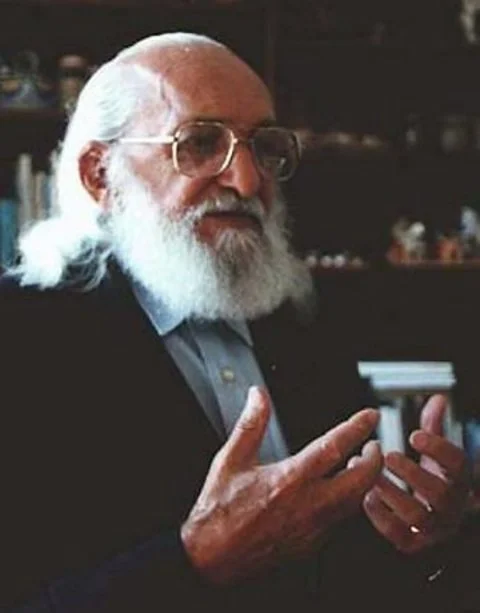

Paulo Freire
Paulo Freire foi um dos mais importantes pedagogos brasileiros. O educador criou um método de ensino inovador acreditando que a educação era uma ferramenta essencial para a transformação da sociedade.
O educador era inteiramente contra a visão tradicional da educação (de transferência de conhecimento), que vê o professor como aquele que possui a sabedoria e o aluno como aquele que recebe essa bagagem. Paulo Freire propôs um método onde professores e alunos dialogavam e o aprendizado se fazia com base nas necessidades diárias reais dos alunos.
Paulo freire: "Não se pode falar de educação sem amor".
Primeira Etec
A Etec "Getúlio Vargas" iniciou suas atividades em 28/09/1911, na Rua Müller, no bairro do Brás, como Escola Profissional Masculina, durante o Governo Estadual de Albuquerque Lins. No Governo Federal, administrava o país, o então presidente Marechal Hermes da Fonseca.
Semana Paulo Freire na ETEC
Maio é o mês em que as Escolas Técnicas Estaduais (Etecs) promovem uma semana com programação especial em homenagem a Paulo Freire. As atividades estão previstas na lei estadual nª 10.098, de 26 de novembro de 1998.
é um dos pensadores brasileiros mais citados do mundo em trabalhos acadêmicos. Ele deixou uma vasta obra sobre práticas pedagógicas e é conhecido por entender a educação como um instrumento de libertação das opressões. Nas Etecs, Paulo Freire será lembrado com atividades que envolvem os alunos e a comunidade em programações diversas, como peças de teatro, pesquisas, exposições e oficinas.